Meet the Cast
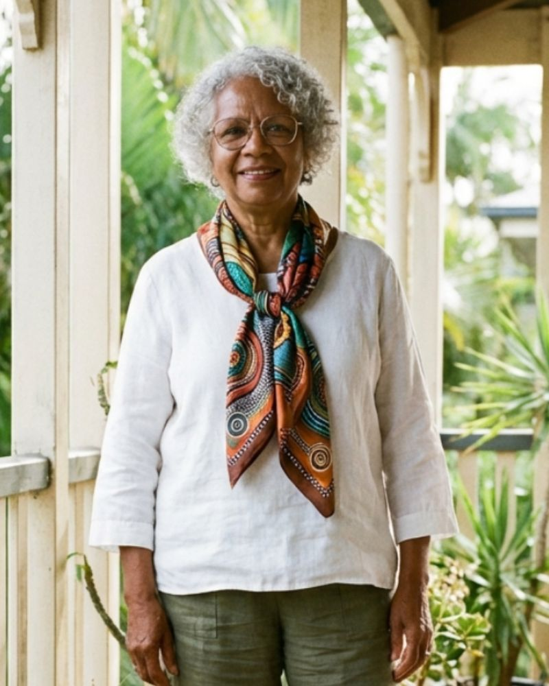
The MatriarchAnna Williams
(late life partner of David, mother of Marcus)
The wise heart who's seen it all and isn’t impressed by any of it. While the rest of the family is running around like a dropped tray of marbles, Anna is the calm at the center of the storm. She specializes in the "Knowing Look"—a silent, smiling gaze that makes you admit you were wrong before she even pours the boiling water. Her tea isn’t just a drink; it’s a truth serum.
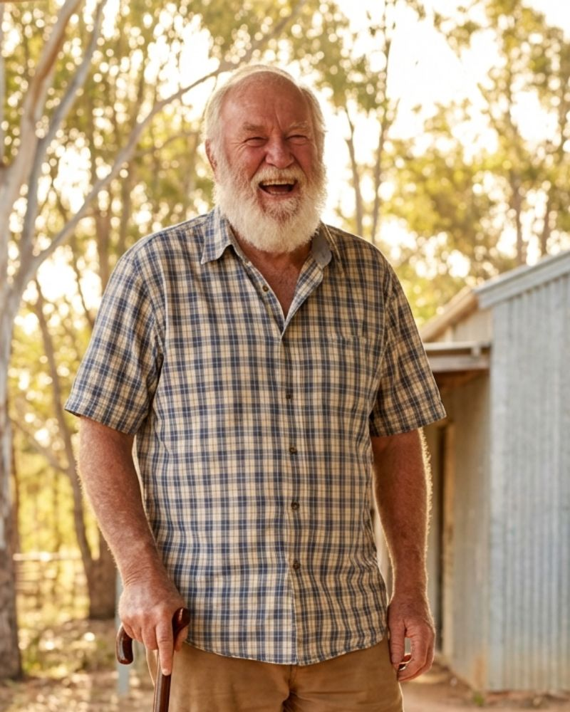
The Happy HazardDavid Foster
(late life partner of Anna)
A walking testament to optimism (and the durability of Australian standard duct tape). He's a DIY enthusiast with a heart of gold and a complete aversion to instructions, directions, and admitting that anything is wrong. He’s the most cheerful guy you’ll meet, even while standing amidst a minor structural failure that he is 100% sure "close enough" is "good enough" for. A man who believes that with enough confidence, a smile, and a refusal to acknowledge the problem, everything will always turn out "all right."
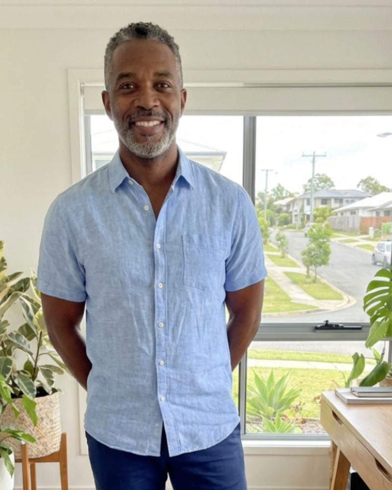
The ProviderMarcus Williams
(Anna's son, Elisa's husband, stepfather of Maya and Benny)
A man of integrity who carries the weight of the world on his shoulders, but usually has a smartphone in his hand. Marcus is the bridge between traditional hard work and the modern digital grind. He’s the first to offer help, but the second he sits down, he’s lost in a spreadsheet or a group chat. He loves his family deeply; he just sometimes needs to be reminded they aren't on mute.
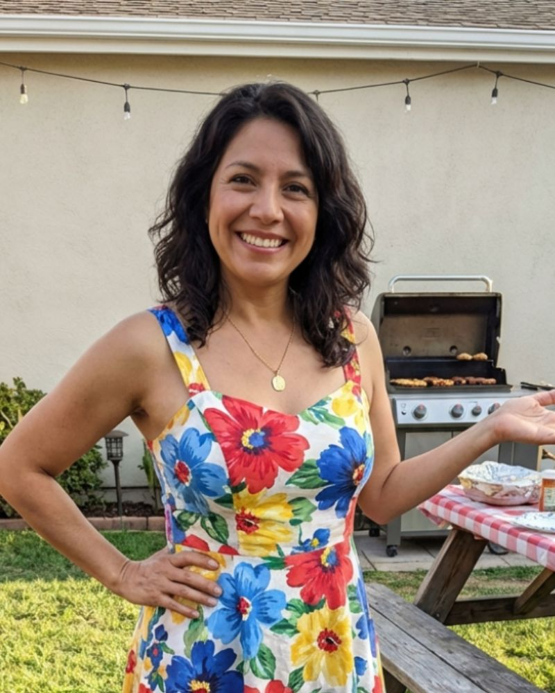
The HeartElisa Santos-Williams
(wife of Marcus, mother of Maya and Benny, Roberto's sister)
If the room feels like it’s glowing, Elisa probably just walked in. She lives life in technicolor and high volume. She brings the warmth of Rio to the Brisbane suburbs, but her emotions are like tropical weather—sunny and beautiful one minute, a category-five storm of passion the next. She doesn't just love; she "over-loves," which is wonderful until she’s decided you must eat three helpings of feijoada for your own good.
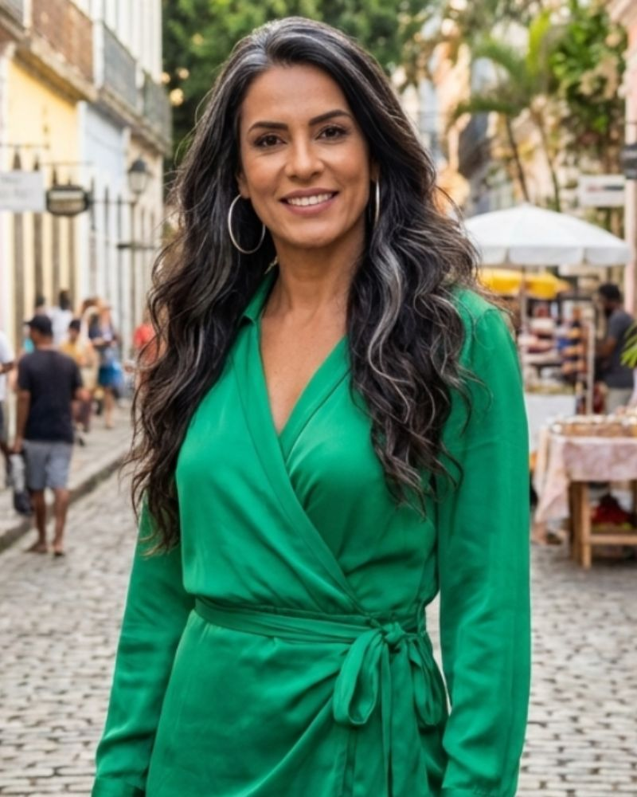
The PerfectionistLucia Santos
(Roberto's wife, Elena's mother)
To Lucia, "good enough" is a personal insult. She views hospitality as a high-stakes competitive sport. Whether it’s the alignment of the napkins or the exact temperature of the room, she is the General of Grace. Her intentions are pure—she wants excellence for everyone—but her quest for a "perfect" life often leaves her family hiding in the pantry just to catch their breath.
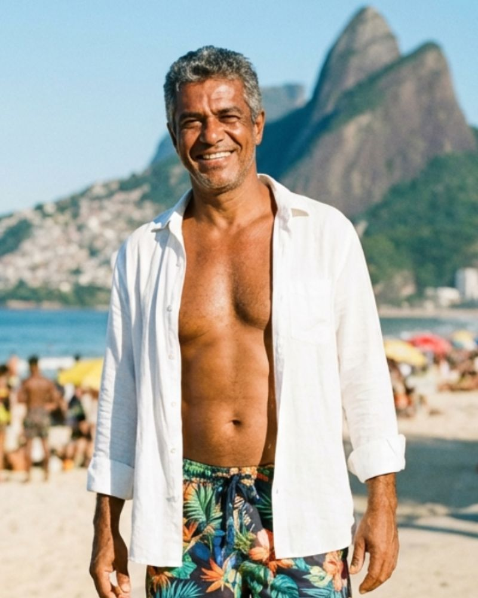
The RhythmistRoberto Santos
(Lucia's husband, Elena's father, Elisa's brother)
The man who can charm the birds out of the trees. Roberto is the life of every party and the first one on the dance floor when things get awkward. He uses humor and charisma to keep everyone smiling, but he has a black belt in "Topic Dodging." If a conversation gets too serious or "hard," Roberto will suddenly find a reason to check the BBQ or start a Conga line.
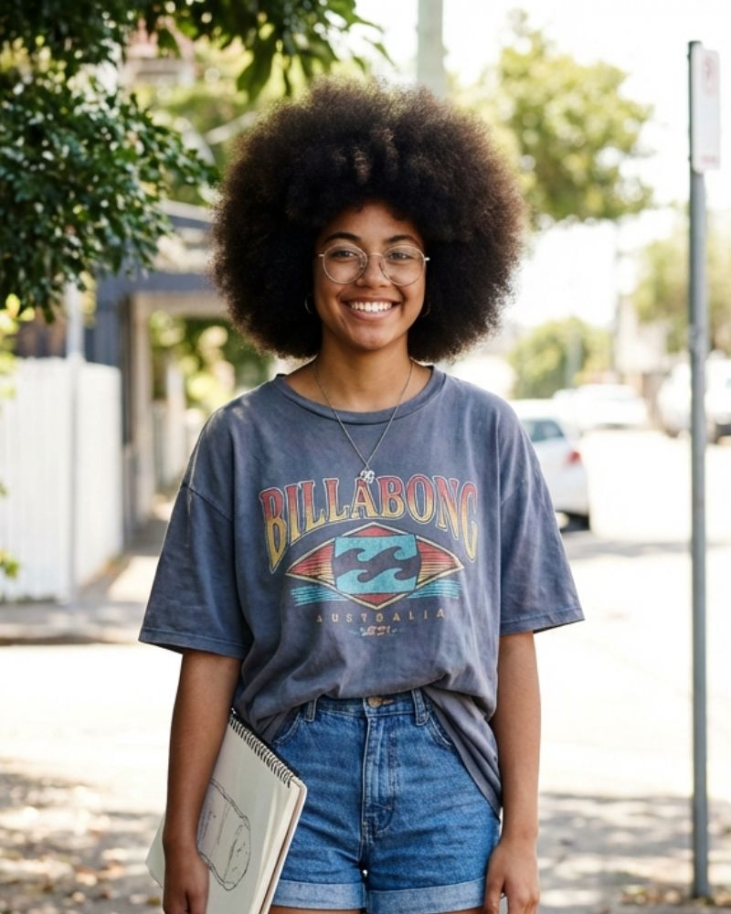
The CynicMaya Santos-Williams
(Elisa's daughter, stepdaughter of Marcus, Benny's sister)
A teenage observer who sees the world through a lens and a sketchpad. Maya is the family’s unofficial historian, though she’d never admit it. She uses her "too cool to care" attitude as a shield, but her drawings reveal a deep sensitivity to the family's quirks. She isn't ignoring the drama; she’s storyboarding it for later.
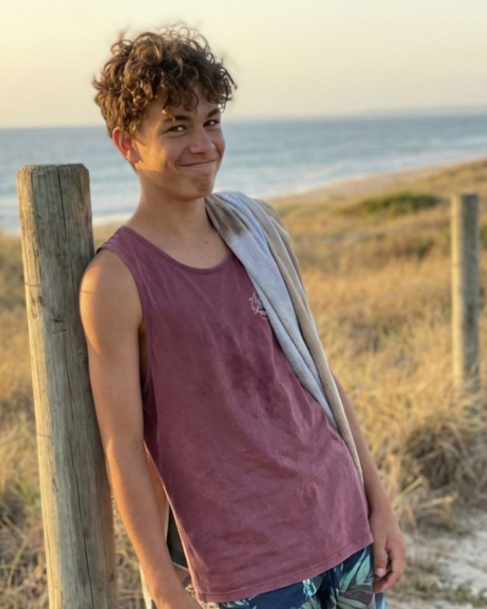
The ChillBenny Santos-Williams
(Elisa's son, stepson of Marcus, Maya's brother)
Benny has a PhD in "Chilling Out." In a family full of high-energy personalities, Benny is the human equivalent of a weighted blanket. He hates conflict so much that he will agree with everyone at once just to keep the volume down. His dream is a world where everyone just relaxes—preferably while he’s horizontal on the sofa.
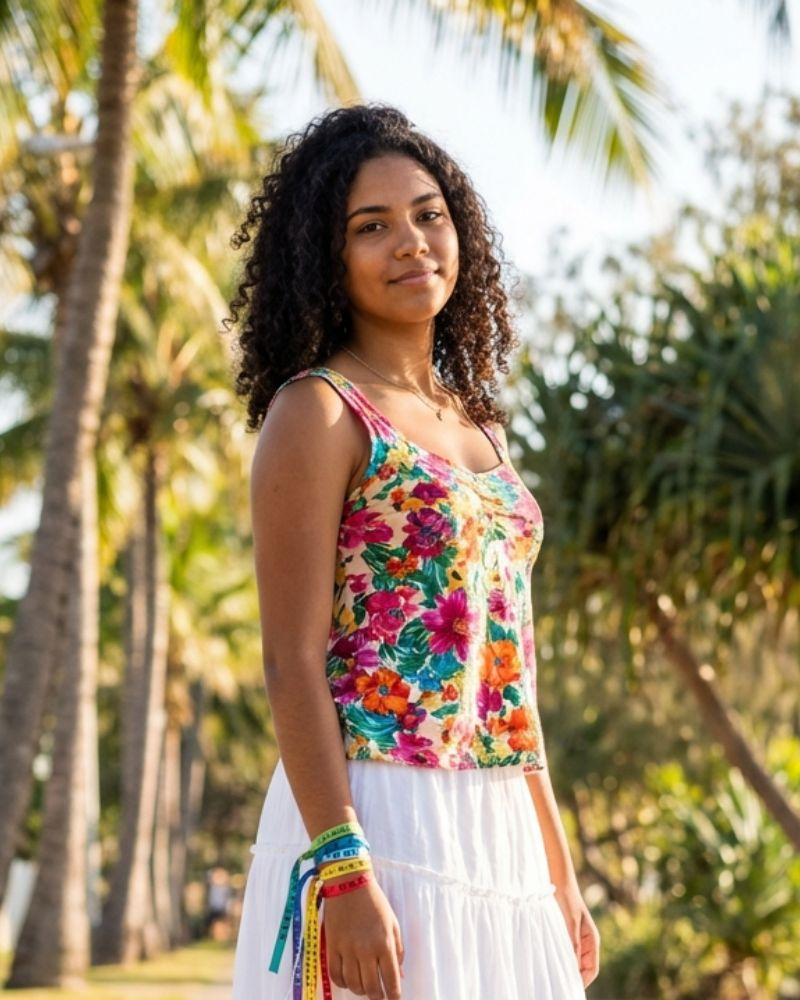
The FireElena Santos
(daughter of Roberto and Lucia, Elisa's niece)
The firebrand of the group. Elena doesn't just have opinions; she has manifestos. Whether it's the local wetlands or global justice, she is always ready to man the barricades. She is the moral conscience of the family, constantly reminding them that "True Love" includes loving the planet—even if the family just wants to have a BBQ without a lecture on carbon footprints.
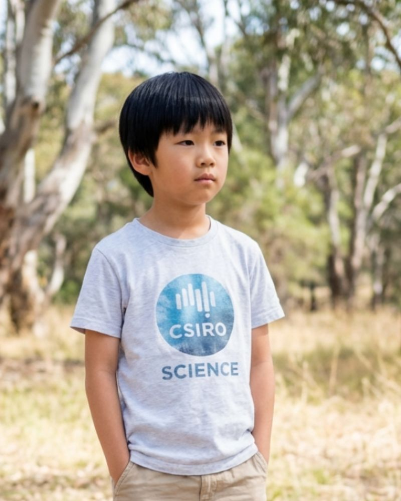
The ScientistKai Tran
(Foster child of Marcus and Elisa)
The "straight man" in a world of Santos-Williams chaos. Kai approaches the human condition like a biology project. He’s quiet, analytical, and prefers the predictable laws of physics to the unpredictable laws of family drama. He’s the person you go to when you need a rational answer, but don't expect him to join the group hug—he hasn't calculated the necessary pressure for that yet.
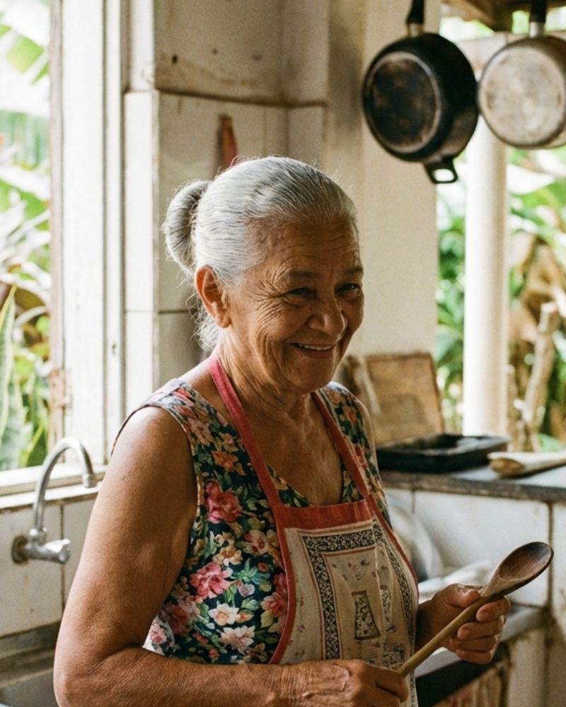
The AnchorDona Bia
(Lucia's mother, Elena's grandmother)
The culinary fortress. Dona Bia believes that culture is preserved in the kitchen and nowhere else. She is the guardian of the old ways, and her recipes are sacred texts. Suggesting an "innovation" to her cooking is like suggesting a rewrite of the laws of gravity. Her kitchen is a sanctuary of love, but it’s a "Look, Don't Touch" museum for anyone else.
Paradise starts where the ego ends. LIVE in Love."